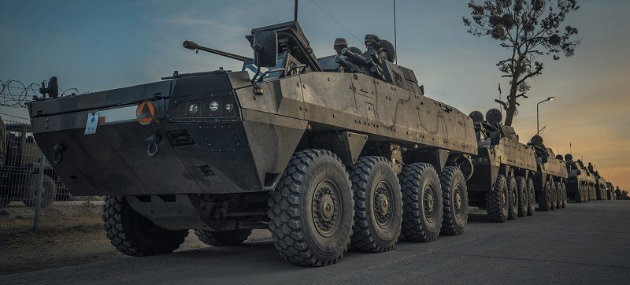

El megaproyecto en Perú que conectará la selva y será construido por Japón
Fecha de Publicación
Es bien sabido que, aunque Perú ha tenido momentos de fortaleza militar en su historia, en general no ha sido considerado una potencia militar. Sin embargo, esto está cambiando. Perú ha librado un total de 8 guerras a lo largo de su historia y, en muchas de ellas, no ha salido bien parado. Pero con el nuevo aliado militar del país, esta situación quedará en el pasado.
¿De qué se trata este contrato? ¿Quién es el nuevo aliado del Perú? ¿De verdad es posible que este convenio beneficie al país?

¡Vamos a darle respuestas!
En una ceremonia realizada el 19 de mayo pasado en el Cuartel General del Ejército, la Fábrica de Armas y Municiones del Ejército del Perú (FAME S.A.C.) y STX Corporation-Hyundai Rotem firmaron un gran acuerdo de colaboración
El acuerdo fue suscrito por el Gerente de FAME S.A.C., Coronel EP Jorge Zapata Vargas, y los CEO de STX Corporation y Hyundai Rotem, Park Sang-jun y Lee Yong-bae, respectivamente. La ceremonia contó con la presencia de la Presidenta de la República, Dina Boluarte, el Ministro de Defensa, el Comandante General del Ejército, y diversas autoridades civiles y militares.
Pero, ¿de qué trata este tratado?
Pues resulta que es para establecer una planta de producción de vehículos militares en este país.
Sí! Así como lo escuchas. En el Perú comenzarán a fabricar vehículos militares.
convenio, considerado un hito en la historia de la defensa nacional, permitirá al país contar con tecnología avanzada para equipar a sus Fuerzas Armadas y Policía Nacional.
esta planta de producción encontraremos:
- Líneas de ensamblaje.
- Fabricación
- Modernización
- Y mantenimiento.
De verdad, es bien sabido que Perú aspira a convertirse en un centro clave de la actividad económica en la región, con el objetivo de ser un punto neurálgico para la construcción de grandes barcos en la costa del Pacífico. Entre los movimientos para lograr este gran objetivo, tenemos el que se realizó a finales de 2023, donde Servicios Industriales de la Marina (SIMA Perú) anunció la elección de un astillero de renombre internacional como socio coproductor:
Se trataba de, nada más y nada menos que, Hyundai Heavy Industries.
Esta compañía surcoreana, líder en proyectos de construcción naval, ahora es la coproductora responsable de ejecutar varios proyectos de construcción naval, entre esos proyectos están:
- 2 buques de desembarco ligeros
- Un buque patrullero oceánico
- La primera de las nuevas fragatas que reemplazarán a las actuales de la clase Lupo.
- 2 unidades auxiliares de transporte logístico
- Una patrulla oceánica
- Un buque multirrol.
Al igual que el más reciente tratado, estos proyectos forman parte de las medidas adoptadas por el Poder Ejecutivo para reformar y fortalecer la industria naval nacional.
Se supo que, SIMA Perú, tras una evaluación inicial, envió cartas a las embajadas de España, Alemania, Corea del Sur, Italia, Países Bajos, Reino Unido, Estados Unidos y Francia para averiguar el interés de las principales industrias de defensa y astilleros navales de estos países en participar en el proceso de selección. El comunicado explicó que, debido a lo complicado del proceso de toma de decisiones, se utilizó una matriz multicriterio para soluciones complejas y se contrató la asesoría especializada de Centrum PUCP. Este enfoque consideró aspectos técnicos, costos, plazos, nivel de transferencia tecnológica, compensación industrial y participación de la industria nacional, entre otros criterios.
¡Y Corea del Sur fue el que resultó ganador! Así que lamentablemente a los otros países se les dejó de lado. Sobre esto SIMA dijo: “Agradecemos la participación de todos los astilleros que presentaron propuestas, teniendo en consideración que siendo de clase mundial, con altos niveles de experiencia enriquecieron el proceso. Agradecer a sus gobiernos que por intermedio de sus embajadas en el Perú dieron muestras de interés por incrementar el nivel de colaboración en una actividad como la de la industria naval que busca convertirse en un motor de desarrollo para el país”.
Pero, tras el procedimiento realizado por una Junta de Selección Ad Hoc, se concretó que Hyundai Heavy Industries sería el astillero escogido. Ahora se espera que SIMA Perú mantenga una fructífera relación con la empresa surcoreana en el futuro próximo.
Además, SIMA Perú mencionó que está desarrollando un proyecto para incrementar las capacidades de reparación naval a través de la construcción y operación de un nuevo dique seco, con el apoyo de un astillero reparador de primera clase, en sintonía con el desarrollo portuario actual del Perú.
La Presidenta Boluarte subrayó la relevancia de este acuerdo para fortalecer la capacidad defensiva del Perú. “El Gobierno promueve la expansión de las capacidades industriales de las Fuerzas Armadas y la transferencia de conocimientos y tecnología” dijo la máxima mandataria, agradeciendo la confianza de la industria coreana e invitando a otras empresas extranjeras a invertir en el país.
Por otro lado, el Embajador de Corea del Sur en el Perú, Kim Moon-soo, extendió sus felicitaciones a ambas empresas por la firma del convenio y reafirmó el compromiso de su país con el desarrollo de la industria de defensa peruana. "Corea del Sur tiene una amplia experiencia en la fabricación de vehículos militares", señaló el Embajador Kim. "Estamos seguros de que esta alianza será muy beneficiosa para el Perú", terminó diciendo.
Es momento de conocer otros Alcances del convenio:
- Línea de ensamblaje integral para la provisión de vehículos blindados 8x8, 6x6, y 4x4, así como camiones, camionetas, cisternas, vehículos a oruga y vehículos a tracción simple.
- Línea integral de fabricación, modernización y mantenimiento para el tipo de vehículos anteriormente mencionados.
- Otras líneas que pudieran integrarse entre las partes durante el desarrollo del convenio.
¡De verdad! Todos esperamos que este tratado impulse significativamente la industria de defensa en el Perú, promoviendo la transferencia tecnológica, la generación de empleo y el desarrollo de capacidades locales. La producción nacional de vehículos militares también contribuirá a reducir las importaciones y fortalecer la economía del país.
La firma de este convenio marca un gran logro en la historia de la defensa del Perú. La alianza entre FAME S.A.C. y STX Corporation-Hyundai Rotem ayudará al país a darle fuerza y vigor a la capacidad defensiva e impulsar su industria tecnológica.
¡Y escucha esto! Esta super alianza ayudará al país a no depender tanto de proveedores extranjeros y avanzar hacia la autonomía en la producción de vehículos militares, asegurando así el acceso a tecnología de vanguardia para la defensa del territorio nacional.
A esta increíble noticia, también hay que agregarle que El Servicio de Mantenimiento del Perú (SEMAN PERÚ S.A.C.) y Korea Aerospace Industries (KAI) firmaron un excelente acuerdo comercial para la producción de componentes aeronáuticos para el avión de combate FA-50. Este convenio también marcó un avance considerable en la industria aeronáutica del Perú, al permitirle convertirse en proveedor de piezas para uno de los aviones de caza más avanzados del mundo. Al igual que el tratado que te presenté en este vídeo, esta firma también contó con la presencia de importantes autoridades, incluyendo a la presidenta Dina Boluarte y representantes de la Fuerza Aérea y la Marina de Guerra del Perú, así como el embajador de Corea del Sur en el Perú y el viceministro del DAPA de Corea del Sur.
KAI, una destacada empresa aeroespacial y de defensa de Corea del Sur, fue originalmente una colaboración entre Daewoo Heavy Industries, Samsung Aerospace y Hyundai Space and Aircraft. Desde su independencia en 1999, KAI ha desarrollado una variedad de productos aeroespaciales, incluyendo el vehículo de lanzamiento espacial coreano II (KSLV-II), varios satélites, y aeronaves como el KT-1 Woongbi y el helicóptero KUH-1 Surion. La expansión hacia el Perú representa un paso estratégico para KAI y una increíble oportunidad para SEMAN PERÚ.
El convenio se centra en la fabricación de alrededor de 250 piezas estructurales para el FA-50. Este avión de caza ligero, con motor a reacción, es utilizado por las fuerzas aéreas de Corea del Sur, Tailandia y Filipinas, y recientemente por Polonia, lo que nos habla sobre su importancia en la modernización de flotas aéreas. Las imágenes del FA-50 revelan un diseño avanzado y letal, equipado con camuflaje y una "cabina falsa" para confundir a enemigos en combate cercano.
La selección de SEMAN Perú como proveedor se debe a su experiencia previa en la fabricación de componentes para 20 aviones KT-1P, coproducidos con la Fuerza Aérea del Perú entre 2014 y 2016, y a su certificación AS-9100, que lo acredita como fabricante de piezas aeronáuticas. KAI proporcionará a SEMAN Perú un paquete de información, incluyendo planos de diseño y materia prima, para facilitar la producción de las piezas del FA-50. Este apoyo permitirá a SEMAN Perú posicionarse como un importante proveedor en la industria aeronáutica global. ¡Es un increíble tratado! Pero en este vídeo no te puedo abordar este también, así que te invito a ver el vídeo donde hablo sobre todo este tema.
Los beneficios de todos estos acuerdos para Perú son numerosos. En primer lugar, impulsará la industria aeronáutica nacional, generando empleos altamente calificados y promoviendo la innovación tecnológica. La integración en la cadena de valor global de la industria aeronáutica permitirá a Perú diversificar sus exportaciones y reducir su dependencia de sectores tradicionales como la minería y la agricultura. Además, la producción nacional de vehículos militares fortalecerá la economía del país y mejorará las competencias técnicas de la fuerza laboral peruana.
El acuerdo también implica una gran transferencia de tecnología y conocimientos avanzados, lo que mejorará las capacidades de diseño, fabricación y ensamblaje de componentes aeronáuticos en Perú. Esto permitirá a SEMAN Perú obtener certificaciones y estándares internacionales, aumentando su capacidad para competir en el mercado global. La colaboración con KAI fortalecerá la economía peruana y posicionará al país como un proveedor confiable de componentes aeronáuticos, abriendo puertas para futuros acuerdos comerciales con otras naciones y empresas del sector.
La presidenta Dina Boluarte ha destacado que estos convenios refuerzan la confiabilidad del Perú como destino de inversión extranjera, promoviendo la dinamización de la economía nacional.
Por si fuera poco, el fortalecimiento de la industria aeronáutica mejorará la modernización de las Fuerzas Armadas peruanas, permitiendo una defensa y autonomía operativa más eficiente y económica. La capacidad de fabricar componentes aeronáuticos avanzados permitirá a Perú mantener y modernizar su flota de aviones militares de manera más efectiva.
